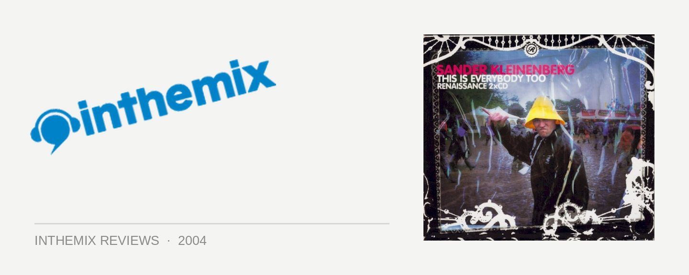

Various Artists - Renaissance pres. This Is Everybody Too, Mixed by Sander Kleinenberg
(Renaissance/Stomp)
Even the biggest fans of progressive house would have trouble denying that the quality of their favourite music has pinwheeled into a dark vortex over the last several years. Emotion had been sapped out of the music and replaced with a slow sense of tribal tedium, and for a while, progressive became a dirty word. In amongst this, the release last year of Sander Kleinenberg’s Renaissance Presents: Everybody represented somewhat of a landmark. Delivered with all the intelligence and sophistication reserved for only the most elite of DJs, it was notable for one main reason – it succeeded in putting the house back into the progressive. Giving me barely enough time to eject his first CD from my player after a solid year of rotation, Sander Kleinenberg has unleashed upon the public the second in the Renaissance series – This Is Everybody Too.
Having earned himself a reputation as a progressive DJ with creative flair, Sander Kleinenberg isn’t interested in pushing overly familiar sounds – and what strikes you as soon as you insert This Is Everybody Too into your CD player is how original and fresh it all sounds. Once again a high degree of energy permeates the recording: it’s all unique, quirky maybe – but none of it is plodding. While it’s instantly recognisable as Sander Kleinenberg, at the same time it’s like nothing we’ve heard before. Wildly eclectic in all of the different styles that are looked included, it’s characterised by a heavy electro influence with a rockin’ house edge. Music influenced by the 80’s has been impossible to avoid over the last 12 months, and This Is Everybody Too shows that even progressive is feeling the impact of electro – and the results are very tasty indeed.
The first CD opens with a distinctly earthy and organic feel, evoking downbeat, electro and even folky sounds. He’s exploring the same slightly avant-garde territory that was heard on his Global Underground NuBreed release, and it’s these sounds that Sander has been known for as much as his driving house. But rather than alienating the listener, they make for a relaxing listen, and before long the chilled out sounds have segued smoothly into the excellent electro-house of Hot Toddy’s Mind Trip. Over the course of the mix a wide variety of different sounds are explored: Hiratazka & Kazell’s In your Eyes is lush house with a warm organic feel, rather than being cold and glitchy, and he then moves into some sinister, driving progressive with tracks from Blue Haze, Rowan Blade and Chris Lak. Then without any warning he slams back into a certified rockin’ house tune from Aussie champions Infusion. Do To You in ‘82 is a rework of a song by 80’s synth-pop act The Machinations that would go down like a bomb in any club, and provides further evidence of how electro is currently being explored by producers in a search for further creative avenues and possibilities. As expected with Sander, the quality of the mixing transcends simple beat matching or even key matching, and extends to an intricate consideration of how two tracks can fit together to achieve a really organic feel.
If the first CD is eclectic and quirky in its direction, then the second offers a more straightforward collection of pumping progressive goodness, injected with almost chronic doses of electric funk. Beginning with some cut-up and twisted electro, it then moves into some dirty, sleazy breakbeat – with one of these tunes surprisingly turning out to be Sander’s new single The Fruit. This smoothly segways into a house beat with a throbbing electro bassline, and for progressive, it’s almost dangerously funky. If Sander’s first Renaissance CD was characterised by its glaringly upfront nature, then the house influence is even more pronounced here. The energy is kept flowing from beginning to end, and it’s surprising how bangin’ it really is. Tracks from Deepsky, Ericke and Shineygray would all sound at home on the main floor of a funky house club, while Nufrequency’s 808 is an absolute stunner, gloriously uplifting big room house with a guitar riff that is a straight kick-back to hits from the 80’s. Once again it flawlessly shifts from different moods and tones, evoking different emotions in the process. Just when you’re thinking that you’re listening to a Ministry of Sound CD, it twists back towards the sound that Sander is known for with D-Formation vs Riva’s Work Together: dirty, sleazy progressive with an aggressive front that hides the beautifully produced layers that lie underneath.
A lot of progressive DJs often claim to reject the term while they’re still pumping out the same old stuff; but for once, the term really is too limiting. So much so that fans of traditional progressive may even be a little disappointed with Sander’s latest, the hint of electro rawness meaning that it’s a little rougher around the edges and harder to pigeonhole than his last compilation. As limiting as it may sound, occasionally there’s something to be said for sticking to the same style within a mix, as genre-hopping can sometimes lead to a feel that is slightly uneven at times. But no one’s going to ciriticise Sander for being too diverse and refusing to remain within his limitations. This is Everybody Too is eclectic, smart and masterfully put together – his compilations have an ability to remain fresh and reveal substance the more they are listened to, and things are no different here. A purchase of This is Everybody Too is a no-brainer for progressive fans, or just house fans in general, and for those who love intelligent music it really cannot come recommended highly enough. A tad more polarized and challenging for fans than his first Renaissance CD perhaps, but it’s nonetheless a progression. There’s that word again.